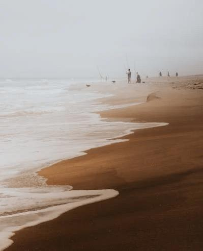
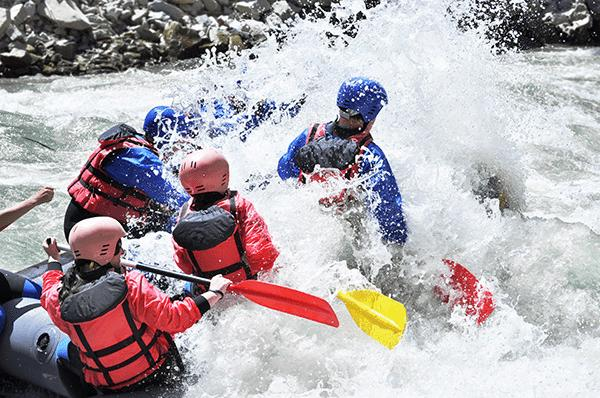
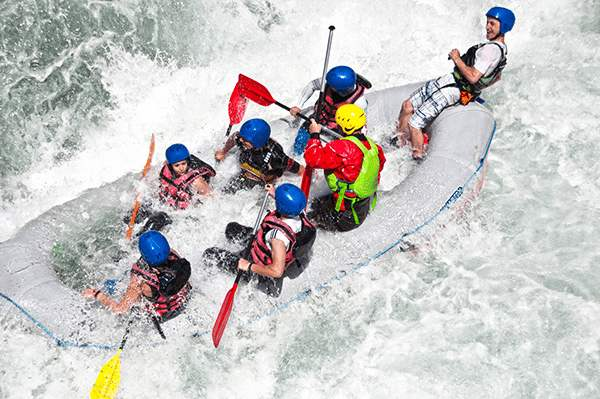
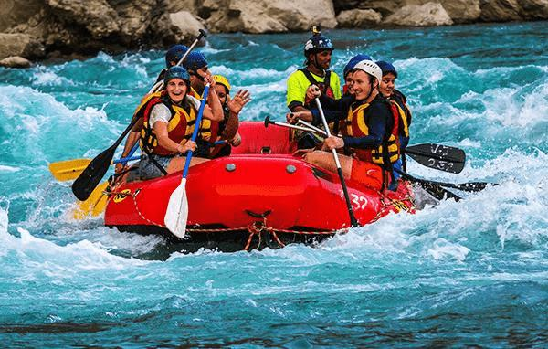
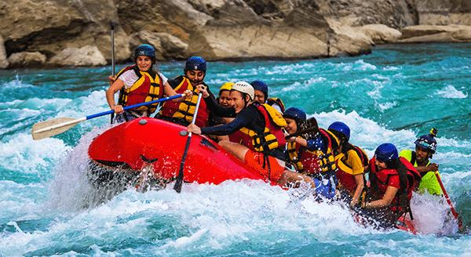
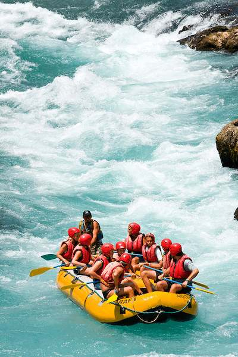

The Rafting Company
Our mission is to provide thrilling, safe, and unforgettable white water rafting experiences across Nigeria’s beautiful and diverse river landscapes—from the serene Osun River to the powerful currents of the mighty River Niger. At The Rafting Company, we believe that adventure is more than just an adrenaline rush; it’s an opportunity to connect deeply with nature, challenge personal limits, and create lasting memories with friends and family. We are committed to offering world-class rafting adventures that are rooted in both safety and excitement. Our professional guides are extensively trained to ensure every trip is conducted with the highest safety standards, allowing our guests to fully immerse themselves in the experience with confidence and peace of mind. Whether you're a first-time rafter or a seasoned adventurer, we offer tailored experiences that match your skill level and thirst for challenge.

History
 Founded in 2010 in Jos, Plateau State, The Rafting Company began with a simple goal: to bring adventure tourism to Nigeria.
Over the past decade, we’ve grown to become the country’s leading rafting outfitter, known for our expert guides, commitment to safety, and love for the outdoors.
Our dedication to quality and customer satisfaction has propelled us to national prominence, making us the first choice for thrill seekers and nature lovers alike.
The team’s passion for eco-tourism and sustainable practices ensures that every rafting trip leaves a minimal environmental footprint while maximizing fun and safety.
From serene rivers to challenging rapids, our experiences are tailored to all skill levels, creating unforgettable memories for families, adventurers, and groups.
Join us and discover the beauty of Nigeria’s waterways like never before.
Founded in 2010 in Jos, Plateau State, The Rafting Company began with a simple goal: to bring adventure tourism to Nigeria.
Over the past decade, we’ve grown to become the country’s leading rafting outfitter, known for our expert guides, commitment to safety, and love for the outdoors.
Our dedication to quality and customer satisfaction has propelled us to national prominence, making us the first choice for thrill seekers and nature lovers alike.
The team’s passion for eco-tourism and sustainable practices ensures that every rafting trip leaves a minimal environmental footprint while maximizing fun and safety.
From serene rivers to challenging rapids, our experiences are tailored to all skill levels, creating unforgettable memories for families, adventurers, and groups.
Join us and discover the beauty of Nigeria’s waterways like never before.
Adventure Awaits You!




